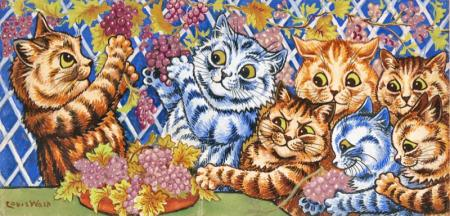
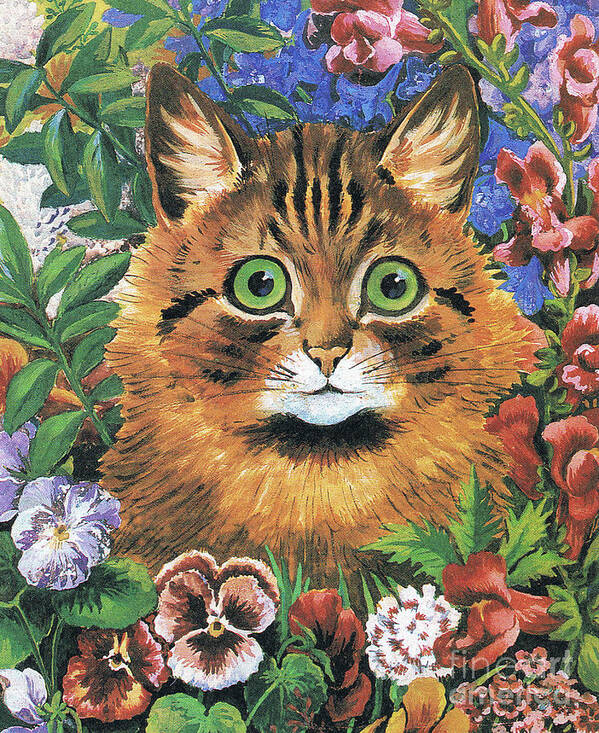
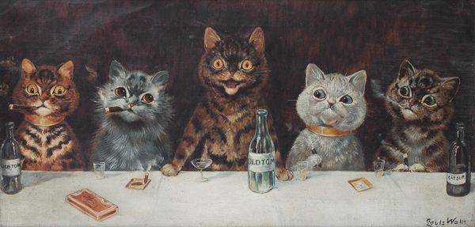

Galería de obras de Louis Wain

Una de las primeras obras icónicas de Wain, mostrando lo cotidiano de los gatos.

Gato con ojos de flor. Se aprecia una clara evolución en su técnica y su expresión.

Un gato entre medio de flores y plantas. Posee una anatomía y color mucho más realista que en sus trabajos anteriores.

Efectivamente, según Wain, los gatos también beben. Una mezcla de humor y sátira en su arte.